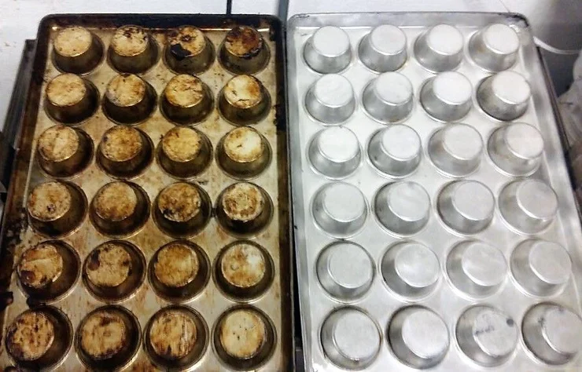
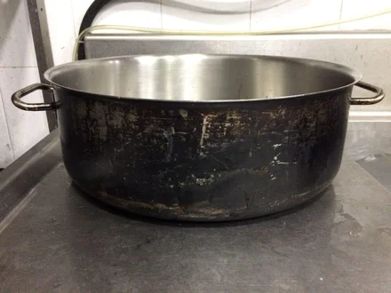
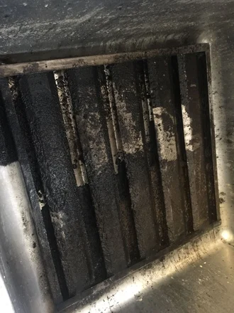
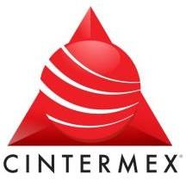

Menos agua e insumos
La limpieza por inmersión ayuda a reducir el consumo de agua, fibras y otros productos de limpieza.
Sistema BIO-3000
Recupera utensilios afectados por grasa, cochambre y carbonización con un sistema de limpieza por inmersión.
El equipo
El equipo de acero inoxidable limpia por inmersión. Usa una fórmula de detergente alcalino diluida en agua a unos 80 °C, compatible con utensilios de aluminio.
El sistema opera las 24 horas con una solución que se utiliza durante 30 días. Sirve para utensilios y piezas desmontables, como charolas, ollas y filtros de campana.
La primera inmersión recupera las piezas con acumulación de grasa o cochambre. Una vez recuperadas, el mantenimiento requiere menos tiempo de inmersión y permite limpiar más piezas.

Beneficios
La limpieza por inmersión ayuda a reducir el consumo de agua, fibras y otros productos de limpieza.
El proceso evita el rayado por tallado y la fórmula es compatible con utensilios de aluminio.
El servicio en comodato incluye producto, reparaciones, repuestos y mantenimiento. Ofrecemos capacitación continua.
Retirar los residuos de grasa ayuda a mantener las condiciones de higiene y reduce las fuentes de alimento para insectos.
La inmersión facilita el desincruste y reduce la necesidad de tallar las piezas y usar desincrustantes agresivos.
Los ciclos de mantenimiento más cortos ayudan a organizar la limpieza de más utensilios durante la operación.
Pruebas de limpieza
Tres ejemplos de recuperación de utensilios con BIO-3000. Los tiempos son aproximados. El mantenimiento se realiza después de recuperar la pieza.

Panadería y pastelería
Cochambre de grasa vegetal.
Retirar el cochambre ayuda a evitar manchas en el pan y mejora la transferencia de calor del molde.


Hotelería
Grasa animal y vegetal carbonizada.
Eliminar la grasa carbonizada reduce el humo al cocinar y ayuda a evitar que se mezclen sabores.


Cocina industrial
Grasa animal y vegetal carbonizada.
La inmersión retira los depósitos de grasa y reduce la necesidad de tallar los bordes del filtro.
Cooking Clean atiende a hoteles, restaurantes, panaderías, pastelerías, hospitales y clubes.

Tu mejor aliado
Conoce lo que BIO-3000 puede hacer por los utensilios de tu cocina.
Visita cookingclean.mx